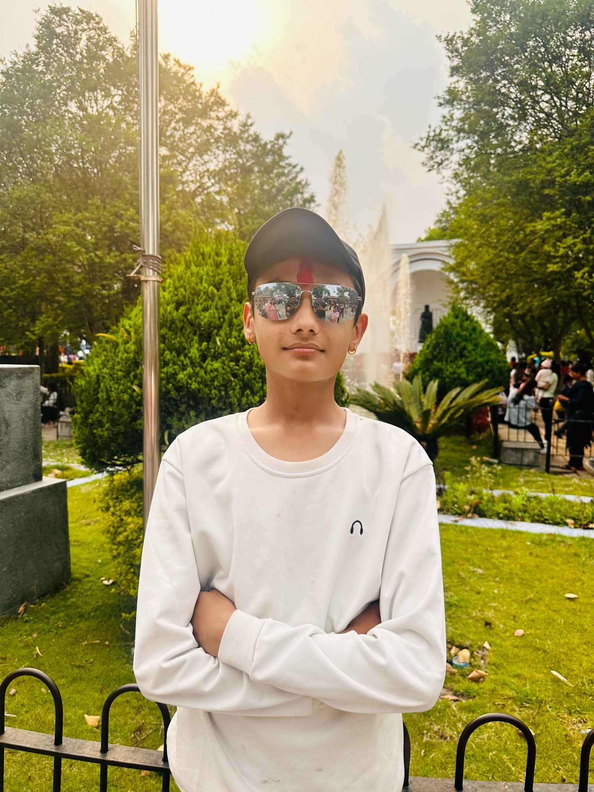

I am a web development learner with skills in HTML, CSS, and JavaScript. I have gained experience through school workshops and online learning, where I worked on practical projects and improved my understanding of web technologies. My goal is to become a full-stack developer, and I am continuously learning and building projects to achieve this.
I enjoy spending my free time in activities that help me relax while also improving my skills and knowledge. Coding and programming are my main interests, as I like exploring new concepts, practicing logic, and building small projects to enhance my problem-solving abilities. I also enjoy playing cricket, which helps me stay active, improve teamwork, and develop discipline and focus. Sports play an important role in keeping me physically fit and mentally refreshed. Reading books is another interest of mine, as it allows me to gain new perspectives, improve my thinking, and learn from different ideas and experiences. I also enjoy listening to music, which helps me relax, stay motivated, and maintain creativity while studying or working on projects. Overall, my hobbies reflect a balance between learning, creativity, physical activity, and personal growth.